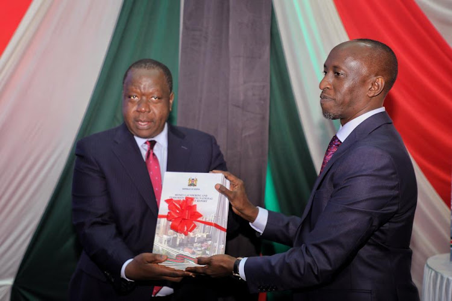

Fraud and forgery are main threats in Kenya, new report shows
Investigations into money laundering activities inadequate
- Motor vehicle dealers, the legal sector, casinos and the gaming industry have made Kenya highly vulnerable to money laundering.
- Car dealers have emerged to be the leading laundering agents.
Contrary to public perception of corruption, a new report has revealed that the main proceeds generating crime in Kenya relate to fraud and forgery.
Further, terrorism is not a major proceed generating crime in Kenya and is rated low risk in terms of the level of threat to money laundering. According to the Money Laundering and Terrorism Financing National Risk Assessment 2021 (NRA) Report, even though terrorism is a serious predicate offence in Kenya, the ultimate motive of perpetrators of terrorism is to kill, maim and avenge Kenyan targets mainly for ideological mileage
There are insignificant proceeds or financial rewards that accrue as a benefit of the attacks. “Overall Terrorism Financing threat in Kenya was assessed as medium and the overall vulnerability for terrorism financing was assessed as medium-low,” the report says. Motor vehicle dealers, the legal sector, casinos and the gaming industry have made Kenya highly vulnerable to money laundering.
According to reports, Kenya acts as a strategic gateway between East and Central Africa and Europe, the Middle East, and Asia and this makes it highly susceptible to acting as a transhipment point for illicit trade and finance. As a result, the country needs to have an effective and adequate anti-money laundering and countering the financing of terrorism (AML/CFT) measures in place. The US government recently listed Kenya as a “major money laundering jurisdiction,” citing numerous domestic and foreign criminal activities and highlighting that money laundering takes place in both the formal and informal sectors.
After updating its AML/ CFT framework, Kenya was removed from the Financial Action Task Force’s (FATF) list of non-cooperative countries and territories. It said the Designated Non-Financial Business and Professions' (DNFBP) sector was assessed as vulnerable in relation to trade-based money launderings like services provided by accountants and lawyers can be used in tax evasion as a result of abusive transfer pricing, trade mispricing, mis-invoicing of services and intangibles and shifting of profits. The assessment showed a high money laundering vulnerability for the DNFBPs sector mainly due to the fact that the players are involved in clients' transactions. Motor vehicle dealers, especially secondhand dealers were assessed as highly vulnerable to money laundering abuse in Kenya. The report found the level of risks in the non-profit organizations (NPOs) sector in Kenya was assessed as low. The assessment determined that the NGO's Coordination Board does not conduct effective monitoring, supervision and other regulatory obligations with reporting requirements under POCAMLA “NPOs in Kenya are registered under different laws hence the inability of NGO's Coordination Board to effectively register and supervise NPOs,” says the report. The NRA which was launched Wednesday, July 27, amongst others, identified the terrorism financing activities which pose a threat to our people. It established money laundering investigations in the country are low. “Investigations and prosecutions to consider parallel financial investigations alongside the predicate offences.” Interior Cabinet Secretary Fred Matiangi said Kenya continues to face security threats from terror attacks, which when they happen, lead to the loss of lives and disruption of our economic activities. He said car dealers have emerged to be one the leading laundering agents in the country and hence the need to tame their activities.
